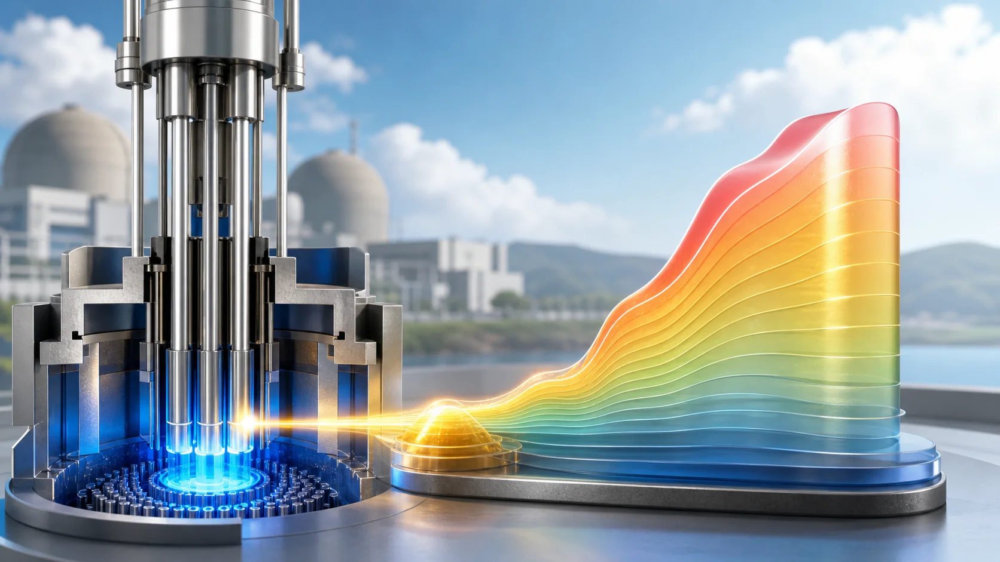
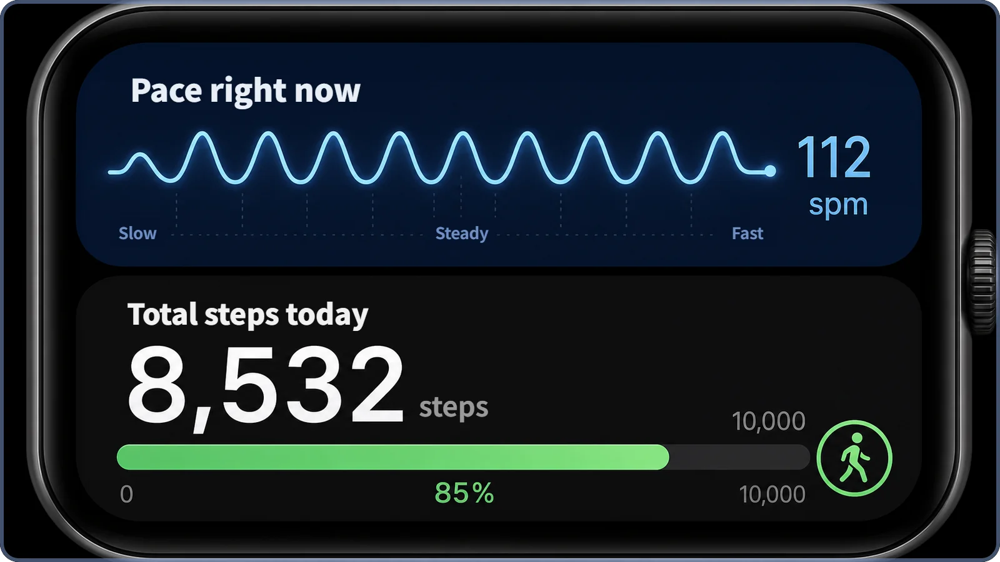
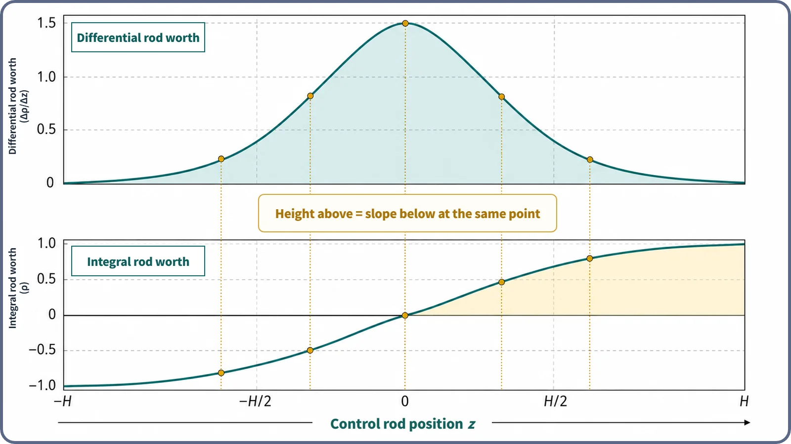

Reactor Kinetics & Reactivity · 116
Your Pace Right Now, Your Steps All Day — Differential and Integral Control Rod Worth
One is the pace right now, the other is the total so far: two mathematical languages for how a control rod's effect depends on where it is.

Differential control rod worth (dρ/dz) is how much reactivity changes when a rod moves a tiny step from where it is now; integral control rod worth ρ(z) is that rate added up from the fully withdrawn position to the rod's current position. They are one relationship seen from two sides, ρ(z) = ∫₀ᶻ (dρ/dz′) dz′, which is why a bell-shaped differential curve always stacks up into an S-shaped integral curve.
Two ways to read a rod's worth
Picture a top-down map of a reactor core, shaded dark where neutron activity is strongest (the center) and paler toward the edges. That shading is control rod worth: how much a rod changes reactivity at that spot. "Worth," though, can be stated far more precisely in two mathematical languages: differential control rod worth and integral control rod worth.
Two numbers on a step counter
A smartwatch or step counter usually shows two numbers. One is your pace right now: how quickly you are stepping at this moment. Hurry and it jumps; stop at a crosswalk and it drops. The other is your total steps today: every step since you woke up, added up. However much your pace jumps around, the total never goes down.
The two are locked together. Add up your pace, moment by moment, from the time you started walking, and you get exactly today's total. Turn it around: plot the total against time, and how steeply that graph climbs at any moment is your pace at that moment. Walk fast and the total climbs steeply; wait at a light and it goes almost flat.
Control rod worth has the same structure. Differential control rod worth is the instantaneous rate: how much reactivity changes if the rod, right where it is now, moves a tiny bit farther. That is the "pace right now." Integral control rod worth is the accumulated reactivity change from the fully withdrawn position (the reference point) to the rod's current position, every instantaneous rate added up along the way. That is the "total steps today." The darkest spot on the core map, the center, is where the differential worth is largest: the stretch where you are walking fastest.

One line of math that ties them together
ρ(z) = ∫₀ᶻ (dρ/dz′) dz′
Here z is the rod's insertion depth (its position). dρ/dz is how much reactivity ρ changes (dρ) when the rod moves a tiny distance dz farther: the differential worth. ρ(z), on the left, is that differential worth added up (integrated) without a gap from the fully withdrawn reference point (usually 0) to z: the integral worth up to z. In watch terms: total steps so far = the pace at every moment, added up from the start.
It works backward too. Differentiate the integral worth curve ρ(z) with respect to z and you get back the differential worth dρ/dz at that point. These are not two separate phenomena but two faces of one relationship.
That also explains the S-shaped curve seen when a rod is pushed in from 0% to 100%: gentle, then steep, then gentle again. The differential worth is bell-shaped, largest in the middle of the core and small at both ends. Stack it up from the start (integrate it) and the total grows slowly near one edge, steeply through the middle and slowly again near the far edge. Integrating a bell shape always gives an S shape. That is not a special law of reactors; it simply follows from differentiation and integration being a pair.

Why keep both curves?
If each converts into the other, why do designers and operators keep both? Because they answer different questions. The integral curve answers: "If I move the rod from here to a target position, exactly how much will reactivity change?" Read the two vertical values and subtract. The differential curve answers: "If I move one step from here, how sensitive is the response?" An automatic control system that nudges rods to hold power needs that sensitivity to decide how gently or boldly to move (to set its gain). On the watch, the total tells you how far you walked today; only the pace tells you whether you are overdoing it.
One caveat. The neat bell is an idealized form. In reality a rod locally pushes down the neutron flux around itself, so a measured or precisely calculated differential worth curve can come out somewhat flattened or lopsided compared with the textbook bell. How much depends on the core design, the rod layout and the burnup of neighboring fuel, so this post keeps it qualitative. That is why plants do not rely on calculation alone: the curves are confirmed with measured values from core physics tests.
Telling the neighbors apart
Control rod worth vs. differential/integral worth. "Control rod worth" is the umbrella term for the fact that a rod's effect depends on its position; differential and integral worth are two precise ways of expressing it.
Integral rod worth vs. reactivity itself. Integral worth is the change one rod has produced relative to its fully withdrawn reference. The reactor's reactivity is the state of the whole system, combining every rod position, fuel burnup, temperature, xenon concentration and more. Integral worth is one input to reactivity, not the same thing.
Differential worth (dρ/dz) vs. rod speed (dz/dt). Rod speed is how fast the rod moves per unit time; differential worth is how much reactivity changes per unit of position. Multiply them (dρ/dz × dz/dt) and you get how fast reactivity changes per unit time, so operation considers both. The specific limits tied to this rate differ by reactor type and plant technical specifications, so no number is given here.
How design and safety use them
Core designers calculate each rod's (or rod bank's) differential and integral worth curves in advance. The differential curve guides the number, layout and insertion sequence of rods so the rate of reactivity change stays within design limits at every position; the integral curve shows how much reactivity is available overall when rods are fully withdrawn and reinserted.
For accidents in which a rod is unexpectedly and rapidly withdrawn or ejected, safety analysis takes two key inputs: the differential worth where it happens (tied directly to how fast reactivity is inserted) and the integral worth accumulated by the end (how much is inserted in total). Acceptance criteria and methods differ by reactor type and regulator, so none are quoted here.
Two common misconceptions
"The two curves show two different phenomena." No. One is an instantaneous rate, the other that rate accumulated: two languages for the same physical reality, just as pace and total steps both come from the same walking.
"Where integral worth is large, differential worth must be large too." No. Integral worth includes everything already passed, so near the core edge, where the differential worth has fallen, the integral worth can still be large. A slow pace at a crosswalk does not shrink today's total.
The short version
- Differential control rod worth (dρ/dz) is the rate of reactivity change as the rod passes its current position; integral control rod worth ρ(z) is that rate added up from the fully withdrawn reference to that position.
- They are linked by ρ(z) = ∫₀ᶻ (dρ/dz′) dz′; because the differential worth is bell-shaped, the integral worth is necessarily S-shaped.
- Differential worth serves control gain and moment-to-moment sensitivity; integral worth predicts the total change to a target position. Both are key inputs to core design and reactivity insertion accident analysis.